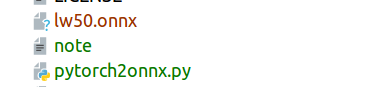

pytorch2onnx
最近做的项目需要把训练好的模型移植到移动端，安卓手机上，实验室选择了ncnn这个框架，所以我选择了pytoch2onnx2ncnn框架的这个思路。下面主要是记录一下pytorch转onnx模型的步骤和踩过的坑。
项目地址ONNX 定义了一种可扩展的计算图模型、一系列内置的运算单元（OP）和标准数据类型。每一个计算流图都定义为由节点组成的列表，并构建有向无环图。其中每一个节点都有一个或多个输入与输出，每一个节点称之为一个 OP。这相当于一种通用的计算图，不同深度学习框架构建的计算图都能转化为它。
如下所示，目前 ONNX 已经支持大多数框架，使用这些框架构建的模型可以转换为通用的 ONNX 计算图和 OP。现阶段 ONNX 只支持推理，所以导入的模型都需要在原框架完成训练。
1、操作步骤
首先一般情况下torch本身就是支持onnx类型的模型输出的，所以一般情况下，根据如下的脚本，基本就可以输出onnx类型的模型文件。以下脚本主要分为这三大部分：加载模型和模型参数，给定一个确定的输入，保存输出onnx类型的文件，至于这三步的代码具体应该怎么写完全根据自己，只要这三大步都有。笔者转的模型是一个二分类的分割任务，具体代码如下，完整代码会考虑上传到github上面。
from torch.autograd import Variable
import six
import sys
sys.path.append('../../')
import numpy as np
from models.resnet import *
from utils.helpers import prepare_img
from PIL import Image
has_cuda = torch.cuda.is_available()
# 加载模型和参数 笔者这里的加载调用了其他函数，贴在下面了
# Initialise models
model_inits = {
'rf_lw50_voc' : rf_lw50, # key / constructor
}
n_classes=2
models = dict()
for key,fun in six.iteritems(model_inits):
# 这里调用的其实是def rf_lw50(num_classes, imagenet=False, pretrained=True, **kwargs)
net = fun(n_classes, pretrained=True).eval()
if has_cuda:
net = net.cuda()
models[key] = net
model=net
#给定一个确定的输入 实际上可以随机初始化一个和需要的尺寸一致的numpy
img_path="/home/litchi/PycharmProjects/light-weight-refinenet/examples/imgs/blind/1110a.png"
img = np.array(Image.open(img_path))
input = (torch.Tensor(prepare_img(img).transpose(2, 0, 1)[None])).float()
if has_cuda:
input = input.cuda()
# onnx模型文件输出
torch_out = torch.onnx._export(model, input, "lw50.onnx",export_params=True)下面是创建模型和加载模型参数的代码
# 创建模型
class ResNetLW(nn.Module):
def __init__(self, block, layers, num_classes=21):
self.inplanes = 64
super(ResNetLW, self).__init__()
self.do = nn.Dropout(p=0.5)
self.conv1 = nn.Conv2d(3, 64, kernel_size=7, stride=2, padding=3,
bias=False)
self.bn1 = nn.BatchNorm2d(64)
self.relu = nn.ReLU(inplace=True)
self.maxpool = nn.MaxPool2d(kernel_size=3, stride=2, padding=1)
self.layer1 = self._make_layer(block, 64, layers[0])
self.layer2 = self._make_layer(block, 128, layers[1], stride=2)
self.layer3 = self._make_layer(block, 256, layers[2], stride=2)
self.layer4 = self._make_layer(block, 512, layers[3], stride=2)
self.p_ims1d2_outl1_dimred = conv1x1(2048, 512, bias=False)
self.mflow_conv_g1_pool = self._make_crp(512, 512, 4)
self.mflow_conv_g1_b3_joint_varout_dimred = conv1x1(512, 256, bias=False)
self.p_ims1d2_outl2_dimred = conv1x1(1024, 256, bias=False)
self.adapt_stage2_b2_joint_varout_dimred = conv1x1(256, 256, bias=False)
self.mflow_conv_g2_pool = self._make_crp(256, 256, 4)
self.mflow_conv_g2_b3_joint_varout_dimred = conv1x1(256, 256, bias=False)
self.p_ims1d2_outl3_dimred = conv1x1(512, 256, bias=False)
self.adapt_stage3_b2_joint_varout_dimred = conv1x1(256, 256, bias=False)
self.mflow_conv_g3_pool = self._make_crp(256, 256, 4)
self.mflow_conv_g3_b3_joint_varout_dimred = conv1x1(256, 256, bias=False)
self.p_ims1d2_outl4_dimred = conv1x1(256, 256, bias=False)
self.adapt_stage4_b2_joint_varout_dimred = conv1x1(256, 256, bias=False)
self.mflow_conv_g4_pool = self._make_crp(256, 256, 4)
self.clf_conv = nn.Conv2d(256, num_classes, kernel_size=3, stride=1,
padding=1, bias=True)
def _make_crp(self, in_planes, out_planes, stages):
layers = [CRPBlock(in_planes, out_planes,stages)]
return nn.Sequential(*layers)
def _make_layer(self, block, planes, blocks, stride=1):
downsample = None
if stride != 1 or self.inplanes != planes * block.expansion:
downsample = nn.Sequential(
nn.Conv2d(self.inplanes, planes * block.expansion,
kernel_size=1, stride=stride, bias=False),
nn.BatchNorm2d(planes * block.expansion),
)
layers = []
layers.append(block(self.inplanes, planes, stride, downsample))
self.inplanes = planes * block.expansion
for i in range(1, blocks):
layers.append(block(self.inplanes, planes))
return nn.Sequential(*layers)
def forward(self, x):
x = self.conv1(x)
x = self.bn1(x)
x = self.relu(x)
x = self.maxpool(x)
l1 = self.layer1(x)
l2 = self.layer2(l1)
l3 = self.layer3(l2)
l4 = self.layer4(l3)
l4 = self.do(l4)
l3 = self.do(l3)
x4 = self.p_ims1d2_outl1_dimred(l4)
x4 = self.relu(x4)
x4 = self.mflow_conv_g1_pool(x4)
x4 = self.mflow_conv_g1_b3_joint_varout_dimred(x4)
#
#x4=F.interpolate(x4,size=l3.size()[2:],mode='bilinear',align_corners=True)
#x4 = nn.Upsample(size=l3.size()[2:], mode='bilinear', align_corners=False)(x4) #[60,34]
x4 = nn.Upsample(size=[60,34], mode='bilinear', align_corners=False)(x4)
print((l3.size()[2:]))
x3 = self.p_ims1d2_outl2_dimred(l3)
x3 = self.adapt_stage2_b2_joint_varout_dimred(x3)
x3 = x3 + x4
x3 = F.relu(x3)
x3 = self.mflow_conv_g2_pool(x3)
x3 = self.mflow_conv_g2_b3_joint_varout_dimred(x3)
# x3 = F.interpolate(x3,size=l2.size()[2:],mode='bilinear',align_corners=True)
# x3 = nn.Upsample(size=l2.size()[2:], mode='bilinear', align_corners=False)(x3)
x3 = nn.Upsample(size=[120,68], mode='bilinear', align_corners=False)(x3)
print((l2.size()[2:]))
x2 = self.p_ims1d2_outl3_dimred(l2)
x2 = self.adapt_stage3_b2_joint_varout_dimred(x2)
x2 = x2 + x3
x2 = F.relu(x2)
x2 = self.mflow_conv_g3_pool(x2)
x2 = self.mflow_conv_g3_b3_joint_varout_dimred(x2)
#x2 = nn.Upsample(size=l1.size()[2:], mode='bilinear', align_corners=False)(x2)
#x2=F.interpolate(x2,size=l1.size()[2:],mode='bilinear',align_corners=True)
x2 = nn.Upsample([240,135], mode='bilinear', align_corners=False)(x2)
print((l1.size()[2:]))
x1 = self.p_ims1d2_outl4_dimred(l1)
x1 = self.adapt_stage4_b2_joint_varout_dimred(x1)
x1 = x1 + x2
x1 = F.relu(x1)
x1 = self.mflow_conv_g4_pool(x1)
out = self.clf_conv(x1)
return out
def rf_lw50(num_classes, imagenet=False, pretrained=True, **kwargs):
# 创建了模型
model = ResNetLW(Bottleneck, [3, 4, 6, 3], num_classes=num_classes, **kwargs)
# 加载模型参数,模型参数文件为./src/ckpt/checkpoint.pth.tar
if imagenet:
key = '50_imagenet'
url = models_urls[key]
model.load_state_dict(maybe_download(key, url), strict=False)
elif pretrained:
dataset = data_info.get(num_classes, None)
if dataset=='blind':
data=torch.load('./src/ckpt/checkpoint.pth.tar')['segmenter']
newdata={}
for key in data:
newdata[key[7:]]=data[key]
model.load_state_dict(newdata,strict=False)
elif dataset:
bname = '50_' + dataset.lower()
key = 'rf_lw' + bname
url = models_urls[bname]
model.load_state_dict(maybe_download(key, url), strict=False)
return model
2、添加操作符号
在模型转换的过程中，可能遇到的一个问题是，在pytorch模型中存在的一个操作在onnx中可能不支持，所以我们就需要在onnx的源码中添加这个操作符的运算。其实详细的说明在torch的官方文档中都有。torch中文官方文档可以搜索onnx来看相关知识和用法。
以下是onnx模型一定支持的一些操作：
add (nonzero alpha not supported)
sub (nonzero alpha not supported)
mul
div
cat
mm
addmm
neg
sqrt
tanh
sigmoid
mean
sum
prod
t
expand (only when used before a broadcasting ONNX operator; e.g., add)
transpose
view
split
squeeze
prelu (single weight shared among input channels not supported)
threshold (non-zero threshold/non-zero value not supported)
leaky_relu
glu
softmax (only dim=-1 supported)
avg_pool2d (ceil_mode not supported)
log_softmax
unfold (experimental support with ATen-Caffe2 integration)
elu
concat
abs
index_select
pow
clamp
max
min
eq
gt
lt
ge
le
exp
sin
cos
tan
asin
acos
atan
permute
Conv
BatchNorm
MaxPool1d (ceil_mode not supported)
MaxPool2d (ceil_mode not supported)
MaxPool3d (ceil_mode not supported)
Embedding (no optional arguments supported)
RNN
ConstantPadNd
Dropout
FeatureDropout (training mode not supported)
Index (constant integer and tuple indices supported)具体的实现过程可以在torch.onnx.symbolic.py中查看，这里有一句_onnx_opset_version = 6，此外还有8,9等差别可以自己查询一下。笔者这里贴出其中两个来举例子：
def add(g, self, other, alpha):
if _scalar(alpha) != 1:
return _unimplemented("add", "alpha != 1")
# See Note [Pointwise by scalar]
return g.op("Add", self, _if_scalar_type_as(other, self), **_broadcast_if_scalar(other))
def sub(g, self, other, alpha):
if _scalar(alpha) != 1:
return _unimplemented("sub", "alpha != 1")
# See Note [Pointwise by scalar]
return g.op("Sub", self, _if_scalar_type_as(other, self), **_broadcast_if_scalar(other))
def mul(g, self, other):
# See Note [Pointwise by scalar]
return g.op("Mul", self, _if_scalar_type_as(other, self), **_broadcast_if_scalar(other))
def div(g, self, other):
# See Note [Pointwise by scalar]
return g.op("Div", self, _if_scalar_type_as(other, self), **_broadcast_if_scalar(other))以上分别是加减乘除运算的实现过程，所以加入自己要自定义操作符号，也应该仿照如上的运算符进行实现。
添加的时候也分为两种情况，一种是在Aten中存在的运算符，一种是没有的。
2.1在Aten中有的运算符
如果增加的operation可以用ATen operation(ATen是pyTorch底层调用的C++ 11库，由pytorch团队开发的)实现，则可以在torch/csrc/autograd/generated/VariableType.h中找到他的声明，在torch/onnx/symbolic.py中添加它，按以下步骤：
- 在torch/onnx/symbolic.py中定义声明函数，确保函数名与在头文件中VariableType.h的ATen operation的函数名一样.
- 函数中的第一个参数必须为ONNX模型图，如add operation的函数名def add(g, self, other, alpha):第一个参数必须是g，其他参数名必须同VariableType.h完全一致.
- 参数的顺序没有强制性要求，一般input参数为张量类型，然后是其他参数为非张量参数.
如果输入参数是张量，但是ONNX要求标量，我们必须明确地进行转换。 辅助函数_scalar可以将标量张量转换为python标量，_if_scalar_type_as可以将Python标量转换为PyTorch张量
在笔者的这个模型的转换中，由于这是一个分割项目，所以一定有上采样升高图片的分辨率的这样的一个过程，所以就涉及到了插值，我需要补充的是双线性插值。代码如下
def upsample_bilinear2d(g, input, output_size, align_corners):
if align_corners:
return _unimplemented("upsample_bilinear2d", "align_corners == True")
height_scale = float(output_size[-2]) / input.type().sizes()[-2]
width_scale = float(output_size[-1]) / input.type().sizes()[-1]
scales = g.op("Constant", value_t=torch.tensor([1., 1., height_scale,
width_scale]))
return g.op("Upsample", input, scales,
mode_s="linear")同理，最近邻插值可以重写为:
def upsample_nearest2d(g, input, output_size):
height_scale = float(output_size[-2]) / input.type().sizes()[-2]
width_scale = float(output_size[-1]) / input.type().sizes()[-1]
return g.op("Upsample", input,
scales_f=(1, 1, height_scale, width_scale),
mode_s="nearest")2.2 在Aten中没有的运算符
如果增加的operation不能用ATen库实现，则需要在相关的pyTorch Function 类中添加声明函数，操作如下：
在相关的Function类中创建一个函数，如命名为symbolic.
同样的第一个参数必须是ONNX图g.
其他参数命名必须与forward中的名字一致.
输出的tuple大小必须与forward的输出大小一致.
声明函数应该使用python定义，方法的具体实现使用C++-Python绑定实现，具体接口如下：
def operator/symbolic(g, *inputs): """ Modifies Graph (e.g., using "op"), adding the ONNX operations representing this PyTorch function, and returning a Value or tuple of Values specifying the ONNX outputs whose values correspond to the original PyTorch return values of the autograd Function (or None if an output is not supported by ONNX). Arguments: g (Graph): graph to write the ONNX representation into inputs (Value...): list of values representing the variables which contain the inputs for this function """ class Value(object): """Represents an intermediate tensor value computed in ONNX.""" def type(self): """Returns the Type of the value.""" class Type(object): def sizes(self): """Returns a tuple of ints representing the shape of a tensor this describes.""" class Graph(object): def op(self, opname, *inputs, **attrs): """ Create an ONNX operator 'opname', taking 'args' as inputs and attributes 'kwargs' and add it as a node to the current graph, returning the value representing the single output of this operator (see the `outputs` keyword argument for multi-return nodes). The set of operators and the inputs/attributes they take is documented at https://github.com/onnx/onnx/blob/master/docs/Operators.md Arguments: opname (string): The ONNX operator name, e.g., `Abs` or `Add`. args (Value...): The inputs to the operator; usually provided as arguments to the `symbolic` definition. kwargs: The attributes of the ONNX operator, with keys named according to the following convention: `alpha_f` indicates the `alpha` attribute with type `f`. The valid type specifiers are `f` (float), `i` (int), `s` (string) or `t` (Tensor). An attribute specified with type float accepts either a single float, or a list of floats (e.g., you would say `dims_i` for a `dims` attribute that takes a list of integers). outputs (int, optional): The number of outputs this operator returns; by default an operator is assumed to return a single output. If `outputs` is greater than one, this functions returns a tuple of output `Value`, representing each output of the ONNX operator in positional. """
3、动态图的尺寸
由于pytorch是动态图，所以就算是在onnx的源码中添加了运算符操作之后，也可能出现问题，问题就是不知道input的尺寸（当创建模型的时候input尺寸是可变的的话）所以也可以看看笔者上边的创建模型的代码，在def forward(self, x)这个函数中，笔者将原来的 x4 = nn.Upsample(size=l3.size()[2:], mode=’bilinear’, align_corners=False)(x4)注释掉了，而是写成了 x4 = nn.Upsample(size=[60,34], mode=’bilinear’, align_corners=False)(x4)，这样子就是把input的尺寸写死了。所以在调用ncnn模型进行前向传播的时候也要注意在将图片输入网络之前一定要将尺寸处理为与模型中的尺寸一致。
完成如上操作确定没错，运行在第一部分提到的脚本，可以生成一个lw50.onnx文件
